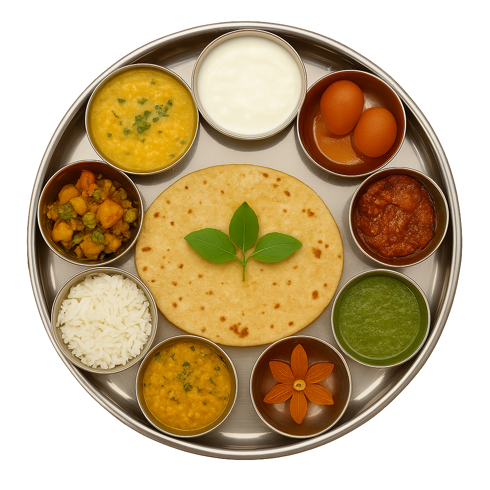

Traditional Recipes Timeline
Khichdi – The Soul Food
A nutritious, one-pot dish made with rice, lentils, and mild spices – celebrated across India.
Idli & Sambar – South Indian Staples
Steamed rice cakes served with tangy, protein-rich lentil stew and coconut chutney.
Masala Dosa
South Indian delicacy made with fermented rice batter and spicy potato filling.
Chole Bhature
Punjabi combo of spicy chickpeas and fluffy deep-fried bhaturas.
Dhokla
Gujarati steamed snack made from gram flour — light, spongy, and flavorful.
Puran Poli
Maharashtrian festive flatbread stuffed with sweet lentil filling.
Bisi Bele Bath
Karnataka’s rice-based spicy and tangy sambar mix — full of veggies and flavour.
Baati Chokha
Rustic delicacy from Bihar and UP — roasted dough balls with spicy mashed veggies.

Click the thali for a surprise! 🍽️